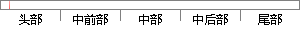

操作系统是计算机系统里面最核心的部分，通过学习和实现操作系统的过程，能加深我们对操作系统的基本原理的理解，对计算机系统的工作过程也会更加清晰。
片段位置图

相似结果
1
原句片段：操作系统是计算机系统里面最核心的部分，通过学习和实现操作系统的过程，能加深我们
相似片段：所以,操作系统是整个计算机系统最核心的部分。浏览器...HTML语法相关概念的简要介绍以及词法语法解析的实现。...一方面可以通过浏览器的源代码来学习设计模式,另...
| 标题 | 《基于MiniGUI的嵌入式Web浏览器的研究与开发》 |
| 对比库 | 中国学位论文全文数据库 |
| 作者 | 刘刚 |
| 机构 | 华中科技大学 |
| 分类 | 通信与信息系统 |
| 年份 | 2004 |
| 相似率 | 74.19% （轻度抄袭） |
2
原句片段：对操作系统的基本原理的理解，对计算机系统的工作过程也会更加清晰。
相似片段：和操作系统 Linux的移植工作,重点研究了 Linux下存储...特别是对计算机系统的底层技术整合,而且还要与特定...Memory),单速率 SDRAM的基本原理同 DRAM的基本原理...
| 标题 | 《双CPU协同处理的数字视频监控系统设计与实现》 |
| 对比库 | 中国学位论文全文数据库 |
| 作者 | 卓沛 |
| 机构 | 华中科技大学 |
| 分类 | 电路与系统 |
| 年份 | 2007 |
| 相似率 | 65.22% （轻度抄袭） |
※ 片段修改建议 ※
近似词参考：- 学习：进修
- 系统：体系
- 我们：咱们
- 里面：内里
- 部分：部门 部份
- 通过：经由过程
- 工作：事情
- 更加：加倍 越发 更为
- 核心：焦点
- 过程：进程 历程
- 清晰：清楚
- 理解：明白
系统自动生成语句：操作体系是计算机体系内里最焦点的部门，经由进程进修和实现操作体系的进程，能加深咱们对操作体系的基本原理的明白，对计算机体系的事情进程也会加倍清楚。
注：本片段修改建议为系统自动生成，仅供参考。